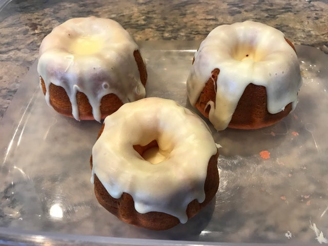

Sweetroll

The iconic sweet treat loved by all across Tamriel!
Crisp and crunchy on the outside, moist and soft on the inside.
This is a truly legendary treat!
Here is the sweetest sweetroll recipe you'll ever need!
Ingredients:
- 1 large bundt tin (or 2 smaller ones)
- 2 cups plain flour
- 1 tsp baking powder
- 3/4 cup milk
- 3/4 cup water
- 1/2 cup caster sugar
- 1 cup maple syrup or honey
- 3 eggs, beaten
- 60g butter, melted
- 1 vanilla pod, scraped
- 3 tsp cinnamon powder
For the glaze:
- 1 cup melted butter
- 1 cup icing sugar
- 1 vanilla pod, scraped
Steps:
- Preheat over to 200C/392F
- Grease your bundt tin well with butter
- In a large mixing bowl, combine all the baking ingredients and mix well
- Pour into the bundt tin(s) and bake for 45 minutes, or until brown and risen
- It should be firm and crusty on the outside
- Flip onto a wire rack to cool before transferring to a plate
For the glaze:
- Combine the melted butter, sugar, and vanilla in a small bowl
- Whip until well blended
- Drizzle over the top of your sweetroll and wait til icing has hardened before eating
Home